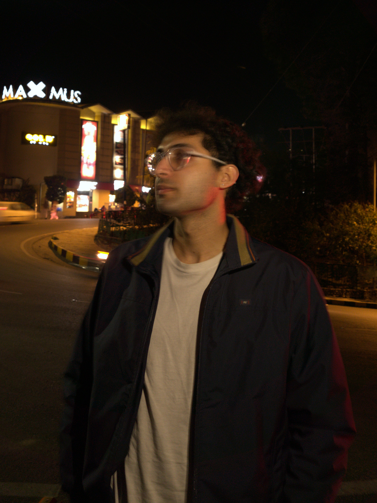

PhD student under Prof. Anniruddha Chakraborty at IIT Mandi, researching machine learning applications in chemistry for odour and scent detection.
Working at the boundary of chemical sensing and machine learning — turning raw spectroscopic and olfactory signal into models that classify, quantify, and generalize.
Applying machine learning models to chemical data for the detection and classification of odours and scents.
Evaluating machine learning models for quantification tasks using surface-enhanced Raman spectroscopy (SERS) data.
Using data-driven approaches to complement experimental chemistry and accelerate analysis and discovery.
Analyzing vibrational spectral signatures — Raman and related techniques — as a data source for machine learning-driven chemical analysis.
Live, animated illustrations of the kinds of signal and model behavior this research works with.
Open to research collaborations, discussions on ML-driven chemistry, and academic opportunities.